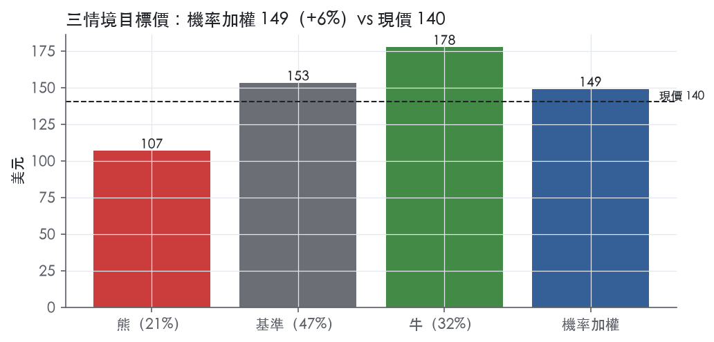
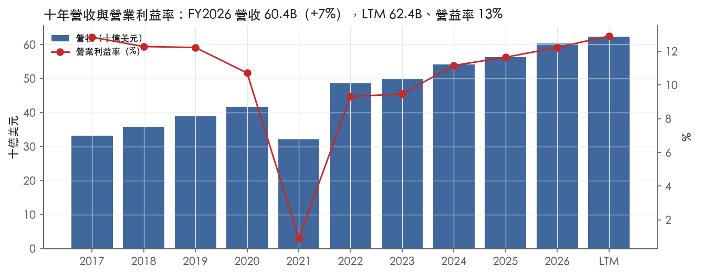
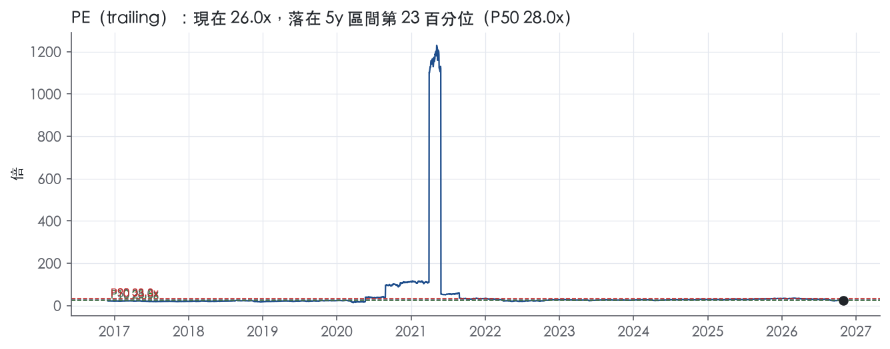
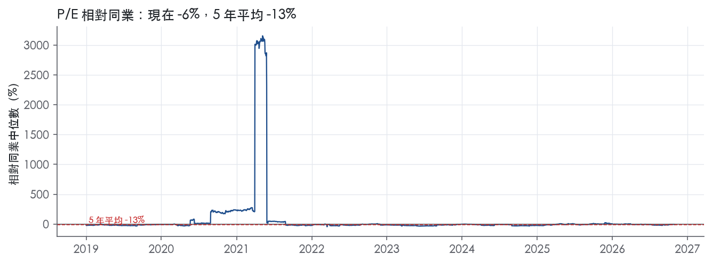
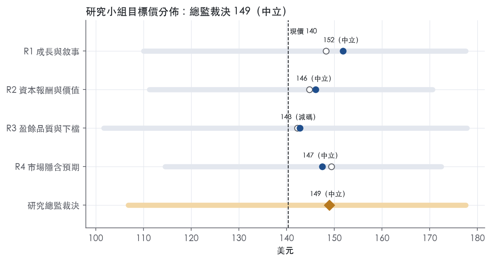
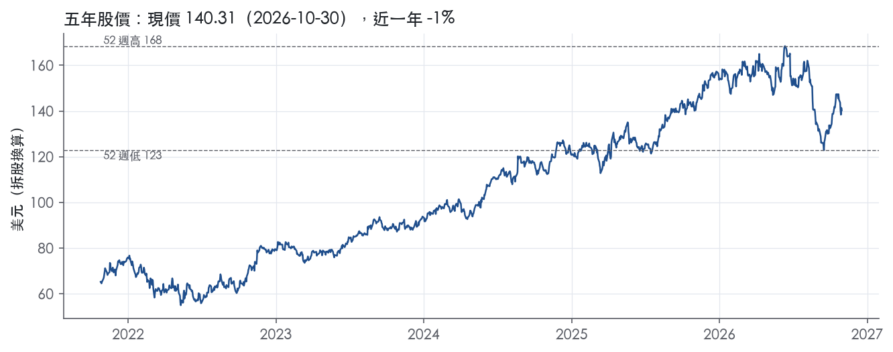

評等總表 › 非必需消費 › TJX
退款剔除後前瞻25x，中性｜評等 中立｜目標價 149
| 報告日 | 評等 | 目標價 | 當時股價 | 超額報酬 |
|---|---|---|---|---|
| 2026-10-30 | 中立 | 149 | 140 | -2.5% |
| 評等 | 中立（邊界，鄰近減碼） |
| 12 個月目標價 | 149 美元 |
| 現價 | 140.31 美元（2026-10-30） |
| 預期報酬 | 股價 +6.2%＋股息 1.3%＝總報酬 +7.5%；同業籃門檻 10.0%，超額 -2.5% |
| 估值方法 | P/E 25.0x，套在第 5–8 季的EPS（也就是一年後的未來四季） |
| 三情境 | 熊 107／基準 153／牛 178 |
| 研究流程 | 四位研究員兩輪辯論＋研究總監裁決 |
| 資料來源 | SEC EDGAR XBRL、Tiingo、FRED（全免費） |
退款剔除後前瞻25x，中性（研究總監裁決，四位研究員兩輪辯論後）
評等 中立（邊界，鄰近減碼）｜12 個月目標價 149 美元（總監三情境機率加權 151 與研究員中位數 147 各半）｜現價 140.31（2026-10-30）
預期報酬：股價 +6.2%＋股息 1.3%＝總報酬 +7.5%。同業籃門檻 10.0%，超額 -2.5%，離減碼的分界不到三個百分點，屬邊界評等（落在其他級距的機率約三成）。
估值方法：P/E 25.0x，套在第 5–8 季的EPS（也就是一年後的未來四季）。三情境：熊 107（21%）／基準 153（47%）／牛 178（32%）。
什麼會讓研究總監改變看法：FY27Q3 Marmaxx 可比 ≤ 0% 且調整後稅前利潤率 < 12.0%，基準倍數降到 24.3x 以下、y2 營益率回 12.5%；Marmaxx ≥ +4% 且 FY28 指引展店 4%、可比下緣 ≥ 3%，基準倍數上移到 26.1x 並轉看多。
| 過去四季（實際，FY2027Q2） | 未來四季 | 第 5–8 季 | 第 9–12 季 | |
|---|---|---|---|---|
| 營收（B） | 62.4B | 66.4B | 70.7B | 75.3B |
| 營收成長 | 7.7% | 6.5% | 6.5% | 6.5% |
| 營業利益率 | 12.9% | 12.5% | 12.7% | 12.9% |
| EPS（美元） | 5.40 | 5.60 | 6.12 | 6.69 |
| EPS 成長 | 23.2% | 3.7% | 9.3% | 9.2% |
| 每股股息（美元） | 1.81 | 1.81 | 1.81 | 1.81 |
| P/E（現價） | 26.0x | 25.0x | 22.9x | 21.0x |
| 股息殖利率（現價） | 1.3% | 1.3% | 1.3% | 1.3% |
過去四季為申報數字；預測為研究總監的假設、程式計算。倍數與殖利率都用現價計算，用來看現價對應各期獲利的高低。
| 情境 | 機率（歷史） | 故事 | 未來四季營收成長 | 第 5–8 季營益率 | 倍數 | 目標價 | 股價漲跌 |
|---|---|---|---|---|---|---|---|
| 熊 | 21%（16%） | 風險表第 1 條 Marmaxx 可比 −1% 擴散到 HomeGoods 0%、海外 +2%，疊加第 4 條薪資與第 3 條新店租約的固定成本去槓桿，回購減半，本行下行路徑，倍數落到前瞻帶 P25 | 3.0% | 11.3% | 21.0x | 107 | -23.9% |
| 基準 | 47%（52%） | 可比 3% 上下加展店提速撐 6.5% 營收，退款剔除後利潤率每年擴張 0.2pp，倍數不重估 | 6.5% | 12.7% | 25.0x | 153 | 9.1% |
| 牛 | 32%（32%） | Marmaxx 回到 FY27Q1 的可比節奏、4% 展店落地、商品毛利續升，倍數越過前瞻帶 P75 向自家 5 年中位靠攏 | 8.0% | 13.2% | 27.0x | 178 | 26.5% |
目標價由程式依研究總監的驅動與倍數計算；機率由研究總監給定。括號內是歷史頻率：把這檔股票過去十年 12 個月報酬的波動形狀，置中在基準情境，結果落在各情境附近的比例。

四位研究員用不同方法各自估值，回應研究總監的質疑後交出第二輪，最後由總監逐點裁決。各研究員的主張見第七章，裁決理由見第八章，完整論證見《研究底稿》。
| 立場（一輪→二輪） | 加權目標價（一輪→二輪） | 評等（一輪→二輪） | 第二輪倍數 | 熊～牛目標價 | |
|---|---|---|---|---|---|
| R1 成長與敘事 | 中性→中性 | 148→152 | 中立→中立 | 25.0x | 110～178 |
| R2 資本報酬與價值 | 中性→看空 | 145→146 | 減碼→中立 | 26.4x | 111～171 |
| R3 盈餘品質與下檔 | 中性→看空 | 142→143 | 減碼→減碼 | 24.0x | 102～178 |
| R4 市場隱含預期 | 中性→中性 | 149→147 | 中立→中立 | 24.5x | 114～172 |
| 研究總監裁決 | 中性 | 149 | 中立 | 25.0x | 107～178 |
目標價由程式依各自的驅動與倍數計算；評等＝機率加權總報酬 − 同業籃門檻。
TJX 是美國與全球最大的折扣服飾及家居用品零售商，靠機會性採購與快速周轉庫存，把品牌與設計師商品以低於正價零售商 20% 至 60% 的價格賣給廣泛所得層的消費者¹。公司旗下擁有超過 5,200 家門店與六個品牌電商網站，橫跨美國、加拿大、歐洲與澳洲十個國家¹。其商業模式的核心是「尋寶式」購物體驗：透過超過 1,400 名採購人員、向全球逾 21,000 家供應商（包含品牌商、製造商、零售商）進行closeout、特殊生產、訂單取消、超量生產等機會性採購，搭配低庫存、快速換貨來維持新鮮感與價格優勢¹。這是一個靠規模化機會採購與彈性物流堆出來的輕資產零售平台，而非自有品牌製造商。
公司分四大營運分部：Marmaxx 與 HomeGoods（均在美國）、TJX Canada、TJX International（含歐洲與澳洲），另外 Sierra 業務併入 Marmaxx 分部報表¹。Marmaxx（TJ Maxx + Marshalls + Sierra）是美國最大折扣零售商，共 2,603 家門店，銷售家庭服飾、配件、家居用品等¹；FY2027 Q2 單季淨銷售 9,109M 美元，季增 3%²，是公司最大的營收貢獻分部，但本季表現低於公司預期²。HomeGoods（含 Homesense）是美國家居用品折扣零售龍頭，共 1,042 家門店，FY2027 Q2 淨銷售 2,507M 美元，季增 10%，是本季成長最快的美國分部²¹。TJX Canada 經營 Winners、HomeSense、Marshalls 三個品牌，共 589 家門店，FY2027 Q2 淨銷售 1,470M 美元，季增 6%²¹。TJX International（歐洲 TK Maxx/Homesense、澳洲 TK Maxx）共 835 家門店，是歐洲最大實體折扣零售商，FY2027 Q2 淨銷售 2,094M 美元，季增 11%（固定匯率 +10%）²¹。各分部佔比約為 Marmaxx 六成、HomeGoods 一成六、TJX Canada 一成、TJX International 一成四。公司長期店數目標從 7,000 家上調至 7,500 家，並計畫自 FY28 起將展店速度提升至 4%²。
公司客戶覆蓋廣泛所得層，靠「每天都便宜」而非促銷定價吸引高頻次回訪¹。地理上美國仍是主力市場（Marmaxx + HomeGoods 合計門店數遠超其他地區），國際布局則透過 TJX Canada 與 TJX International 擴張，TK Maxx 已進入英國、愛爾蘭、德國、波蘭、奧地利、荷蘭，並於 2026 年 3 月起進軍西班牙¹。通路以實體門店為主（約 5,200+ 家），電商僅六個網站作為補充，公司未揭露電商占營收比重，10-K 未揭露。TJX 透過銀行合作發行 TJX 品牌信用卡，但不持有應收帳款，顯示其零售業務本質、不涉入消費金融風險¹。
FY2026Q3（期末 2025-11-01）營收 15.12B，年增 7.5%，毛利率 32.6%、營益率 12.7%（相關資料）。FY2026Q4（期末 2026-01-31）營收 17.74B，年增 8.5%，營益率擴張至 13.5%，為近八季最高。FY2027Q1（期末 2026-05-02）淨銷售 14.3B 美元，較去年同期增加 9%，可比銷售增 6%，稅前利潤率 12.0%，稀釋EPS 1.19 美元，較去年同期 0.92 美元增 29%，各項指標均遠高於公司計劃³；公司將全年 FY2027 可比銷售指引上調至增 3% 至 4%，稅前利潤率指引上調至 11.9% 至 12.0%，稀釋EPS 指引上調至 5.08 至 5.15 美元，股票回購區間上調至 2.75B 至 3.0B 美元³。FY2027Q2（期末 2026-08-01）淨銷售為 15.2B 美元，較去年同期第二季增加 5%，可比銷售增 4%，稅前利潤率 13.3%，較去年同期增加 1.9 個百分點，稀釋EPS 1.36 美元，較去年同期增加 24%，均遠高於公司計劃²；HomeGoods、TJX Canada、TJX International 本季可比銷售增幅達 6% 至 7%，但 Marmaxx 銷售低於預期²。本季因收到 IEEPA 關稅退款 331M 美元，連帶計提年終獎金與酌定獎金增加費用 112M 美元，兩者對稅前利潤的淨效益為 219M 美元²；排除此效益後，調整後稀釋EPS 為 1.22 美元，年增 11%²。公司因此再度上調全年稅前利潤率與EPS指引，並宣布將長期展店速度自 FY28 起提升至 4%、長期店數目標上調至 7,500 家²。
公司將成長引擎歸因於其彈性商業模式——機會性採購、低庫存、靠近銷售時點的快速補貨，使其能用較傳統零售商更低的加價空間維持利潤，同時持續創造尋寶式購物體驗以驅動回訪頻率¹。CEO Ernie Herrman 表示市場上品牌優質商品的供給「依然非常充裕」，公司已準備好利用市場上豐富的採購機會，並對 TJX 長期成長的跑道「非常有信心」³；在 Q2 法說中他進一步表示公司計畫加速展店至 4%，並相信可將全球門店總數擴大至 7,500 家，對於全球多元化業務的實力感到振奮²。公司也強調持續對股東返還現金（股票回購加股息）同時投資業務以支撐中長期成長²。TJX 近四季展現出的核心特徵是「規模夠大、庫存夠鬆、才能持續用機會採購打贏價格戰」，HomeGoods 與國際分部的高個位數至雙位數可比銷售增長顯示其在家居與海外市場仍有明顯滲透空間，而 Marmaxx 作為最大、最成熟的分部增速放緩屬合理現象。展店目標從 7,000 家一次性上調至 7,500 家，且加速展店時點提前至 FY28，反映管理層對現有市場飽和度判斷趨向樂觀，值得關注其是否會稀釋單店經濟效益。整體而言，TJX 的護城河建立在規模化全球採購網絡與低成本營運結構之上，而非品牌或技術壁壘，這使其對零售景氣循環的敏感度相對較低，但也意味著成長天花板終究受限於可機會採購的商品總量。

TJX 的護城河來自全球機會性採購規模與低成本營運，在折扣零售這個高度競爭的產業裡，這是少數有把握撐過 10 年的結構性優勢。毛利率長期穩定、ROIC 遠高於資本成本，兩項數字都支持這個評級。唯一的例外是疫情年，而那一年屬於外生停業衝擊，不是競爭侵蝕。
成本優勢（主要來源）。 優勢的核心是採購端的規模與彈性，同業很難複製。公司在全球約 21,000 家供應商中採購，FY2026 新增數千家供應商⁴。採購組織超過 1,400 人，向逾 100 個國家下單⁴。貨源包括品牌、製造商與其他零售商的 closeout、品牌與工廠的特殊生產、訂單取消與超量生產，取得價格有大幅折扣⁴。
供應商願意優先把貨給 TJX，原因有四項⁴：
這是一個自我強化的循環：店越多，能消化的尾貨越多；能消化越多，供應商越先找 TJX，進貨成本也越低。
營運端同樣是低成本結構。公司表示相對多數傳統零售商成本較低，廣告以推廣旗幟品牌為主，因此廣告費占銷售比重偏低，門店也不在裝潢上大量花錢⁴。物流方面，公司在六個國家營運約 31M 平方英尺的配送中心，專為折扣模式設計⁴。
無形資產（次要來源）。 旗幟品牌的價值在於導流，而不在於訂價權。公司擁有 TJ Maxx、Marshalls、HomeGoods、Winners、Homesense/HomeSense、TK Maxx、Sierra 等主要商標的使用權⁴。「尋寶式」體驗與快速換貨的目的是製造急迫感、提高回訪頻率⁴。品牌讓 TJX 不必做促銷，公司的做法是不辦特賣、不發優惠券⁴。
轉換成本、網路效應、效率規模三類，原文沒有可引用的證據，不列入。
看得到：ROIC 長期遠高於資本成本，毛利率穩定。
與「寬」評級衝突的地方有三處，照實列出。
第一，ROIC 標準差達 34.0%，區間從 9.0% 到 147.5%，並不符合「穩定」的標準。 最低值發生在 FY2021：當年 ROIC 9.0%，營收成長 -23.0%（量化底稿最低值），營益率 0.9%（量化底稿最低值）。這是門店被迫停業造成的，不是對手搶走份額。隔年 FY2022 的 ROIC 達 147.5%，是低基期反彈造成的峰值。換言之，標準差主要來自同一次外生衝擊的一下一上。即使在最壞的一年，ROIC 9.0% 也只略低於資本成本 10.0%，而且營業現金流仍有 4.56B。
第二，營益率標準差 3.3%，同樣主要由 FY2021 拉大。 最新值 12.2% 已接近十年最高的 12.8%，代表費用端的效率在疫後已經修復。
第三，ROIC 絕對水準偏高，應打折解讀。 零售業的門店租約與負營運資金會壓低投入資本，ROIC 的絕對值很可能被放大。所以我們只拿它判斷「是否高於資本成本」，不拿它當真實的資本報酬率。即使大幅打折，超額報酬仍然充裕。
綜合以上，我們維持寬護城河評級，不下修。
最大的風險是貨源端：機會性採購的原料是別人的錯誤，如果市場上的錯誤變少，優勢就會縮小。
寬護城河加上穩定的毛利率，支持目標倍數相對零售同業給予溢價。目前 P/E 26.0x（px 快照）低於自身 5 年中位數 28.0x，落在 5 年 22.9% 分位（現在分位），護城河並未變窄，沒有理由向下修正倍數基準。溢價年限可以用 10 年以上估算；疫情型停業衝擊應視為一次性壓力情境，不應拿來調降長期倍數。
| 指標 | 最新 | 十年平均 | 標準差 | 最低 | 最高 |
|---|---|---|---|---|---|
| ROIC | 87.1% | 85.9% | 34.0% | 9.0% | 147.5% |
| 毛利率 | 31.0% | 28.6% | 1.9% | 23.7% | 31.0% |
| 營業利益率 | 12.2% | 10.3% | 3.3% | 0.9% | 12.8% |
| FCF 利潤率 | 8.1% | 7.3% | 2.1% | 4.1% | 12.4% |
| ROE | 59.1% | 52.6% | 18.4% | 1.5% | 65.5% |
程式計算。資本成本代理值（10 年債＋5%）：10.0%；ROIC 平均減資本成本：75.9%；ROIC 有資料的 9 年中，高於資本成本 8 年。
LTM 營業現金流／淨利為 1.32x、近三年平均 1.29x，均高於 1.00x 綠燈門檻，盈餘有現金支撐。LTM 自由現金流／淨利 0.97x、近三年平均 0.91x，同樣站在綠燈區，資本支出沒有侵蝕盈餘品質。應計比率 LTM 為 -5.4%、近三年 -4.5%、十年平均 -5.1%，長期穩定為負值，代表盈餘長期靠現金而非應計項目堆出來，這是零售商典型的「先收現金、後認存貨成本」結構。十年期 CFO／淨利平均高達 6.20x，是因為 FY2021 疫情年淨利被壓到 0.09B 但 CFO 仍達 4.56B 造成的分母失真，不代表常態轉換能力（資料包十年表）。拉長看 FY2024–FY2026 CFO 分別為 6.06B、6.12B、6.87B，FCF 分別為 4.33B、4.20B、4.92B，現金流與淨利（4.47B、4.86B、5.49B）同步成長，轉換關係穩定（資料包年度表）。
Q2 FY27 唯一的非 GAAP 調整項是 IEEPA 關稅退款淨利益，公司收到關稅退款合計 331M 美元，因此額外計提年終獎金與酌定獎金 112M 美元，兩者相抵後對稅前利潤的淨利益為 219M 美元，相當於每股 0.14 美元²。GAAP 稀釋 EPS 1.36 美元，剔除關稅退款淨利益後調整 EPS 為 1.22 美元，年增 11%²。上半年同樣有 0.14 美元的淨利益，調整後上半年 EPS 為 2.41 美元，年增 19%²。這項調整是一次性、有明確金額與因果對應的真實事件（退稅收入對應獎金支出），不是美化盈餘的灰色地帶費用（如重組或資產減損），我認為分析時應以調整後數字為基準，但不需要對其打額外折扣，因為公司已完整揭露金額且邏輯清楚。新聞稿中沒有看到 SBC 加回、攤銷調整或重組費用等常見的「清洗式」非 GAAP 項目，調整範圍很窄，顯示管理層沒有在用非 GAAP 口徑系統性美化盈餘。
淨負債為 -3.13B（淨現金狀態），淨負債／EBITDA LTM 為 -0.33x、近三年平均 -0.37x、十年平均 -0.66x，全部遠優於 1.50x 綠燈門檻，槓桿對估值倍數沒有限制作用。近三年利息保障倍數平均 83.8x、十年平均 60.8x，付息能力毫無壓力。股東回饋方面，Q2 FY27 回購 5.1 百萬股共 798M 美元，加上股利 529M 美元，單季合計回饋 1.3B 美元；上半年回購 8.9 百萬股共 1.4B 美元，加股利 1.0B 美元，合計回饋 2.4B 美元²。全年指引維持回購 2.75–3.0B 美元²。（股利＋回購）／淨利 LTM 為 78.2%、近三年 84.6%、十年平均 137.8%，十年平均超過 100% 顯示公司在某些年度（特別是 FY2021 疫情低利潤年）用現金或債務維持回饋力度，但目前淨現金狀態下這不構成風險。稀釋股數年變動 LTM 為 -0.3%，近三年及十年平均分別為 -1.4%、-1.8%，持續淨減少，顯示回購確實在抵銷股權稀釋而非單純對沖員工配股。公司並計畫將開店成長率提高到 4%、長期全球門店目標上調至 7,500 家，屬於擴張性資本配置但未見於現金流數字異常（原文）²。
計分表九項綠燈、一項黃燈，逐項回應如下：
估值應以調整後 EPS（剔除關稅退款 0.14 美元／股的一次性淨利益）作為盈餘基礎，不需要對 GAAP 數字做額外的保守折扣，因為唯一的非 GAAP 調整項金額小、因果清楚且已被公司完整拆解。現金轉換持續 ≥0.9x、應計比率長期為負、淨現金資產負債表，顯示盈餘品質可信、不應對 P/E 或 EV/EBITDA 倍數施加品質折價。唯一的黃燈（存貨成長略快於營收）屬於開店擴張與機會性採購的正常現象，不需要在估值模型中反映額外的營運資金風險貼水。
| 項目 | LTM | 近三年 | 十年 | 燈號 | 規則 |
|---|---|---|---|---|---|
| 營業現金流／淨利 | 1.32x | 1.29x | 6.20x | 綠 | ≥1.00x 綠、<0.80x 紅 |
| 自由現金流／淨利 | 0.97x | 0.91x | 5.22x | 綠 | ≥0.90x 綠、<0.60x 紅 |
| 應計比率（(淨利−CFO)／平均總資產） | -5.4% | -4.5% | -5.1% | 綠 | ≤0.0% 綠、>5.0% 紅 |
| SBC／營收 | 0.4% | 0.3% | 0.3% | 綠 | ≤3.0% 綠、>8.0% 紅 |
| 淨負債／EBITDA | -0.33x | -0.37x | -0.66x | 綠 | ≤1.50x 綠、>3.00x 紅 |
| 利息保障倍數（營業利益／利息） | — | 83.8x | 60.8x | 綠 | ≥8.00x 綠、<3.00x 紅 |
| 稀釋股數年變動 | -0.3% | -1.4% | -1.8% | 綠 | ≤0.0% 綠、>3.0% 紅 |
| （股利＋回購）／淨利 | 78.2% | 84.6% | 137.8% | 綠 | ≥50.0% 綠、<0.0% 紅 |
| 應收帳款成長 − 營收成長（FY2026） | +2.5pp | — | — | 綠 | ≤5pp 綠、>15pp 紅 |
| 存貨成長 − 營收成長（FY2026） | +6.5pp | — | — | 黃 | ≤5pp 綠、>15pp 紅 |
程式計算；燈號以 LTM（無則近三年平均）判定。
| 風險 | 觸發指標（看什麼數字、在哪裡看） | 對 EPS 的影響方向與粗略幅度 | 未來 12 個月發生機率 | 出處 |
|---|---|---|---|---|
| Marmaxx（最大分部，Q2 淨銷售 9,109M，占比約六成）可比銷售持續低於公司計劃 | 每季 8-K 揭露的 Marmaxx 可比銷售成長率；Q2 已降至 +1%（去年同期 +3%） | 方向：負向，大（Marmaxx 營收規模遠大於其他分部，任何放緩直接拖累集團營益率） | 中 | 8-K 財報新聞稿（2026-08-19） |
| 關稅與貿易政策不確定性反轉（IEEPA 退款的一次性利益消退、新一輪全球關稅生效） | 每季 8-K 的「tariff refund / incremental tariff cost」揭露；10-K 中關於 IEEPA 退款時程與金額的更新 | 方向：負向，中～大（Q2 淨利益僅 219M，排除後調整後EPS年增僅11%而非24%） | 中 | ²⁵ |
| 展店加速（FY28 起 4%、長期目標上調至 7,500 家）稀釋單店經濟效益或執行不如預期 | 每年新開店數 vs. 計劃、各分部可比銷售與新店貢獻的拆分（10-K Item 1 店數表、法說會揭露） | 方向：負向，中（成長型資本支出增加但回報未必同步提升） | 中 | ²⁵ |
| 勞動成本持續上升（最低工資、工會化壓力、福利成本） | 10-Q/10-K 中 SG&A 占營收比重；Q2 SG&A 已達 20.3%，年增 0.8 個百分點 | 方向：負向，中（毛利率改善若被SG&A吃掉，營益率擴張空間有限） | 高 | ²⁵ |
| 估值已回升至歷史中樞附近，任何成長或獲利不如預期即觸發倍數收縮 | trailing P/E（現 26.0x，5y P50 28.0x，分位 22.9%）；EV/EBITDA（現 16.4x，分位 27.8%）——季度更新於資料包 | 方向：負向，大（倍數收縮疊加獲利不如預期會放大股價跌幅） | 中 | 研究判斷 |
Marmaxx 疲弱是最直接可監測的風險，因為它是集團唯一單季可比銷售低於公司計劃的分部，而 HomeGoods、TJX Canada、TJX International 三者本季可比銷售增幅都達 6% 至 7%²。CEO 在法說中承認「Marmaxx 銷售低於我們的預期」，同時表示「第三季初已看到 Marmaxx 的改善」²，這句話本身就是下一季要驗證的關鍵指標：如果 Q3 的 8-K 顯示 Marmaxx 可比銷售未能回到正常區間（過去兩年同期為 +1%～+3%），代表管理層的樂觀判斷錯誤，市場會重新評估公司整體成長韌性。Marmaxx 占淨銷售約六成，任何個位數的可比銷售偏離都會直接反映在集團營益率與每股盈餘上。
關稅是一次性利益也是潛在的一次性損失來源，本季 331M 美元的 IEEPA 退款貢獻了毛利率 2.0 個百分點、稅前利潤 219M 美元的淨利益，但同時增提了 112M 美元的年終獎金費用²。10-K 揭露美國最高法院已於 2026 年 2 月判決 IEEPA 關稅違法，但後續又發布新的全球關稅行政命令，貿易政策走向「不明確」⁵。這代表公司既有退款的不確定性（金額與時程未定），也有新關稅成本的不確定性，兩者都不可控且會直接衝擊毛利率，投資人應緊盯每季新聞稿中是否再出現類似的「net benefit/cost from tariff」揭露行，以及揭露金額的方向是正是負。
展店加速本身是管理層主動釋放的樂觀訊號，但也是新增風險來源。公司將長期店數目標從 7,000 家一次上調到 7,500 家，並把展店速度從目前水準提升到 4%（自 FY28 起）²。10-K 風險章明確提到，如果找不到合適地點、新店表現不如預期，公司可能需要調整展店計劃，甚至關閉門店並繼續承擔長期租賃義務⁵。公司幾乎所有門店都是長期租賃⁵，加速展店若伴隨單店銷售效率下滑，會在未來幾年持續侵蝕營益率，而這在財報的「新開店數 vs. 可比銷售成長」交叉比對中可以被看出來。
勞動成本是結構性、持續性的壓力，不是一次性事件。Q2 的 SG&A 占營收比重已年增 0.8 個百分點至 20.3%，公司明確指出主因是「店內薪資與人事成本增加」²。10-K 也列出最低工資法規、工會化、福利成本、通膨等多重因素會持續推升勞動成本，且公司在美國門店的最大勞動力目前尚未工會化，一旦工會化會帶來額外成本與限制⁵。這條風險的機率標為「高」，因為它幾乎每季都在發生、且方向一致（成本持續上升），只是幅度大小的問題。
估值風險是結果性風險，不是公司基本面風險，但最終決定股價表現。目前 trailing P/E 26.0x 落在五年分佈的 22.9% 分位、EV/EBITDA 16.4x 落在 27.8% 分位，均低於五年中位數（28.0x、17.5x），顯示市場目前給的倍數並不貴，但公司股價過去一年報酬為 -1.4%、且距52週高點168.41有相當差距，代表倍數已從高點收縮過一輪。如果上述任何一條基本面風險（Marmaxx、關稅、勞動成本）兌現，倍數有進一步往 P10（23.5x／14.2x）靠近的空間，形成「EPS 下修＋倍數收縮」的雙重跌幅。
回購規模對 EPS 成長的貢獻度偏高，若現金流不如預期或管理層縮減回購，EPS 成長會立即減速。 公司 H1 FY2027 稀釋 EPS 年增 26%，但扣除關稅淨利益後調整後 EPS 僅年增 19%²，而公司 H1 已回購 1.4B 美元股票並維持全年 2.75B–3.0B 美元回購指引²。10-K 風險章雖提到「若公司暫停回購計畫，EPS 可能受到不利影響」⁵，但沒有把回購對當期 EPS 成長率的貢獻度量化揭露，這是報告中該補的監測點：看稀釋股數年減速度是否與 EPS 成長率脫鉤。
公司對「Marmaxx 第三季已改善」的口頭保證尚未有財報數字佐證，存在管理層預期過度樂觀的風險。 CEO 僅說「第三季初已看到 Marmaxx 的改善」及「第三季開局強勁」²，這是一句前瞻性陳述，尚未被任何已申報數字驗證。下一份 Q3 財報（預計 11 月發布）的 Marmaxx 可比銷售數字，將是檢驗管理層這句話可信度的第一個硬指標，若不如預期，市場可能同時下修對管理層前瞻指引的信任度。
現價 140.31 對應 trailing（過去四季）P/E 26.0x、EV/EBITDA 16.2x、EV/EBITA 18.8x、EV/Sales 2.4x、FCF 殖利率 3.8%。主要估值倍數 P/E 現在 26.0x，落在5 年區間第 23 百分位（P10／P50／P90 = 23.5x／28.0x／33.3x）。

把程式的機械基準預測放到現價下，市場付的前瞻倍數是：P/E（未來四季） 24.1x、P/E（第 5–8 季） 22.4x。反推 DCF 顯示市價隱含未來五年營收年成長 12.4%（WACC 9.0%、終值成長 3.0%、FCF 利潤率 8.3%，SBC 不加回）。
| 倍數 | 現在 | 5 年 P10 | 5 年 P50 | 5 年 P90 | 現在分位 | 全期 P50 |
|---|---|---|---|---|---|---|
| P/E | 26.0x | 23.5x | 28.0x | 33.3x | 22.9% | 26.4x |
| EV/EBITDA | 16.4x | 14.2x | 17.5x | 20.5x | 27.8% | 17.2x |
| EV/EBITA | 19.1x | 17.0x | 20.6x | 24.3x | 22.2% | 20.2x |
| EV/EBIT | 19.1x | 17.0x | 20.6x | 24.3x | 22.2% | 20.2x |
| EV/Sales | 2.5x | 1.5x | 2.1x | 2.8x | 69.8% | 1.9x |
| P/S | 2.5x | 1.6x | 2.2x | 2.9x | 71.9% | 1.9x |
| P/FCF | 26.7x | 23.5x | 34.6x | 92.1x | 23.8% | 29.7x |
trailing 倍數（股價 ÷ 過去四季）；分位以每個交易日計算。
同業籃：ROST, BURL, WMT, COST, TGT（手動名單（playbooks/peers.yaml））。評等門檻 10.0%：同業「倍數不變下持有一年」的隱含報酬中位數（＝ FCF 殖利率 ×(1＋g)＋g，g 為 5 年營收年複合成長並夾在 −2%～8%），每家夾在 0～15%、P/E 低於 5 倍視為資料可疑而排除，中位數再限制在 10 年債到 10 年債＋5% 之間（同業原始中位數 10.1%）。
| 代號 | 市值 | 5 年營收 CAGR | 營益率 | ROIC | P/E | 5 年 P/E 中位數 | EV/EBITDA | P/FCF | 隱含報酬 |
|---|---|---|---|---|---|---|---|---|---|
| TJX | 154.5B | 13.4% | 12.9% | 87.1% | 26.0x | 28.0x | 16.2x | 26.3x | 12.1% |
| ROST | 73.0B | 12.7% | 13.7% | 67.0% | 27.7x | 24.6x | 17.8x | 26.2x | 12.1% |
| BURL | 14.9B | 14.9% | 7.5% | 24.8% | 21.3x | 37.8x | 11.8x | 36.1x | 11.0% |
| WMT | 985.4B | 5.0% | 4.4% | 17.7% | 44.6x | 38.5x | 21.6x | 72.9x | 6.4% |
| COST | 448.7B | 9.1% | 3.8% | 43.6% | 50.9x | 50.6x | 31.5x | 51.0x | 10.1% |
| TGT | 70.1B | 2.3% | 5.6% | 17.9% | 16.0x | 16.2x | 9.0x | 15.7x | 8.8% |
| 同業中位數 | 9.1% | 5.6% | 24.8% | 27.7x | 37.8x | 17.8x | 36.1x | 10.0% |
全部 trailing，程式以各公司 SEC XBRL 與 Tiingo 行情計算；第一列為本檔。
P/E 相對同業中位數：現在 -6.1%，過去 1 年平均 -5.3%、3 年 -9.4%、5 年 -12.7%；EV/EBITDA 相對同業中位數：現在 -7.9%，過去 1 年平均 0.5%、3 年 5.3%、5 年 9.7%。

事後實現前瞻倍數帶（P/E，2018-09-17..2025-09-15）：P10／P50／P90 = 19.0x／24.3x／90.4x。它是每個交易日的股價除以之後四季實際實現的指標；一年後，今天的第 5–8 季正是那時的未來四季，所以這條帶是 12 個月目標價的同口徑倍數。因為用的是事後實際而非當時預期，過去成長超乎預期的公司這條帶會偏低。
程式的機械基準（成長率從過去四季年增率三年收斂到 6%、利潤率持平）用 事後實現前瞻 P/E P50 估值得到 152（8.5%），市場現行前瞻倍數（現價 ÷ 基準 未來四季指標）一年後持平，套在基準 第 5–8 季指標得到 151。這兩個數字只是參考點，不是本報告的目標價；研究員對這個定價的回應在第七章。
下表是每位研究員第一輪（各自獨立）與第二輪（回應研究總監的質疑後）的結果。目標價全由程式依各自的假設計算。
| 立場（一輪→二輪） | 加權目標價（一輪→二輪） | 評等（一輪→二輪） | 第二輪倍數 | 熊～牛目標價 | |
|---|---|---|---|---|---|
| R1 成長與敘事 | 中性→中性 | 148→152 | 中立→中立 | 25.0x | 110～178 |
| R2 資本報酬與價值 | 中性→看空 | 145→146 | 減碼→中立 | 26.4x | 111～171 |
| R3 盈餘品質與下檔 | 中性→看空 | 142→143 | 減碼→減碼 | 24.0x | 102～178 |
| R4 市場隱含預期 | 中性→中性 | 149→147 | 中立→中立 | 24.5x | 114～172 |
| 研究總監裁決 | 中性 | 149 | 中立 | 25.0x | 107～178 |
目標價由程式依各自的驅動與倍數計算；評等＝機率加權總報酬 − 同業籃門檻。
分歧度：第一輪 加權目標價 142～149（區間＝現價的 5%）· 倍數 24～27x · 立場 中性×4（方向一致）；第二輪 加權目標價 143～152（區間＝現價的 6%）· 倍數 24～26.4x · 立場 中性×2、看空×2。

| 研究員 | 第二輪主張 | 堅持的理由 |
|---|---|---|
| R1 成長與敘事 | 中性，前瞻 P/E 25x，展店提速撐住 6.5–7% 營收。 | 第二年營收維持 7.0%，因為整年都落在 4% 展店期。 |
| R2 資本報酬與價值 | 減碼，P/E 26.4x 取十年中位數，預期報酬落後同業。 | ROIC 從 103.0% 回落到 87.1%，倍數不能高於十年中位數。 |
| R3 盈餘品質與下檔 | 相對同業減碼，P/E 24.0x，盈餘真實但報酬落後同業。 | 可比轉負時，租金與薪資的固定成本去槓桿，熊情境利潤率不放寬。 |
| R4 市場隱含預期 | 中立偏弱，P/E 24.5x，退款墊高的利潤率會先被修正。 | 展店效益到第三年才顯現，第三年營收 7.0% 高於基準模型的 6.0%。 |
每位研究員的逐條回應與完整論證見《研究底稿》（TJX_研究底稿_2026-11-01.docx）。
| 分歧點 | R1 | R2 | R3 | R4 | 什麼資料會分出勝負 |
|---|---|---|---|---|---|
| ① 營益率 y1→y2 | 12.5→12.7%，指引系統性保守 | 12.5→12.8%，Q2 商品毛利 +0.7pp 勝過薪資 +0.2pp，FY24→26 已傳到營益層 | 12.5→12.5%，薪資與租金去槓桿 | 12.4→12.6%，退款墊高的基期先修正 | FY27Q3 8-K（2026-11 下旬）調整後稅前利潤率對去年同期 12.7%、調整後 SG&A 年增 |
| ② NTM 營收 y1 | 6.5% | 6.0%，Q2 淨銷售只 +5% | 6.0% | 6.5%，可比取指引中點加展店 | FY27Q3 淨銷售年增、Marmaxx 可比 |
| ③ Q5–Q8 營收 y2 | 7.0%，整段落在 4% 展店期 | 6.5% | 6.3% | 6.5%，新店首年產能約七成、展店貢獻約 3pp | FY28 指引（2027-03 初）展店數與可比下緣 |
| ④ 倍數與口徑 | 25x@q5_q8，前瞻帶偏誤對 TJX 不利 | 26.4x@ntm，10 年 trailing P50，ROIC 回落不給溢價 | 24.0x@q5_q8，一年後持平 | 24.5x@q5_q8，較市場乾淨倍數小幅收縮 | Q3 Marmaxx 可比 ≥ +2% 驗證 CEO「已改善」；相對 ROST 27.7x 的折價是否收窄 |
| ⑤ 熊情境 | 21x、3.0/4.0/4.5%、11.8/11.5/11.8%，22% | 22x、3.5/4.0/4.5%、11.6/11.5/11.6%，24% | 20x、3.0/3.5/4.5%、11.4/11.3/11.6%、股數 −0.5%，20%，有分部拆解 | 21x、4.0/4.5/5.0%、12.0/11.8/11.8%，24% | Q3 HomeGoods 可比是否跌破 +3%；FY27 回購是否低於 2.75B |
① 營益率：own，12.5%→12.7%→12.9%。 y1 四人都在 12.4–12.5%，取 12.5%。基準 12.9% 含 Q2 退款淨效益 1.4pp²，不能延續；NTM 的去年同期就是 LTM 四季（12.7%、13.5%、12.0%、調整後 11.9%），上半年調整後利潤率年增，12.5% 是「下半年對去年同期持平、不再擴張」的假設，不外推含存貨與油料避險利益的 Q1³。本部營業利益預測偏高（總監 +0.9%、R1 +2.6%、R4 +1.8%），不往上。y2 方向採 R2 的 V3 證據（商品毛利 +0.7pp 大於薪資 +0.2pp；FY2024 11.2%→FY2026 12.2%、FY2026），但不到 12.8%：R2 自己承認改善已放慢、ROIC 由 103.0% 回落到 87.1%（FY2026）；FY28 起 4% 展店的開辦費與新租約正落在 Q5–Q8（風險表第 3 條），薪資是第 4 條、機率「高」。R3 的持平 12.5% 等於假設 Q2 商品毛利改善全部回吐，沒有證據，他自己的 FY2023 檢驗也顯示擠壓年利潤率沒有下滑。y3 12.9% 回到基準，對應 FY28 新店成熟。
② NTM 營收：expectations，6.5%。 R2／R3 把 Q2 報表 +5% 當常態，但固定匯率是 +6%，上半年淨銷售 +7%，CEO 稱第三季開局強勁²；NTM 後半落在 FY28 上半年，4% 展店已啟動。本部營收預測偏低（R2 −0.6%、R3 −0.7%），R2 勝過基準只有 46%，下修要更強證據。不取基準 7.1%：LTM 年增含 FY27Q1 的 +9.2%，那季有 +1pp 匯率³；依本行非必需消費指引，可比取 3–4% 指引下緣。
③ Q5–Q8 營收：expectations，6.5%；y3 6.5%。 R4 有拆解（可比 3.5% 加新店首年產能約七成的 3pp）；R1 的 7.0% 把 4% 展店當成熟店算，沒有爬坡假設；現行淨增 129 家對 5,214 家⁴跳到 4% 是執行跳升，10-K Item 1A 寫明新店不如預期仍要扛長期租約。依本行前提可比應取 3% 而非 3.5%，但 FY28 新店在 Q5–Q8 逐步成熟補回，淨結果仍 6.5%。R3 的 6.3% 沒有拆解。y3 取 R1／R2 的 6.5%：4% 展店全在基數；不取 R4 的 7.0%，3.5pp 展店貢獻等於假設零稀釋。
④ 倍數：growth，25x eps@q5_q8。 口徑用劇本主尺。R2 的 10 年 trailing P50 套 NTM 是合格的交叉驗證（147，落在我的基準與熊之間），但「ROIC 回落所以不能高於中位」不成立：87.1% 仍遠高於 ROST 67.0%、BURL 24.8%，護城河章與盈餘品質章都找不到該打折的理由；他拿 FCF 殖利率 3.8% 對 10 年債 4.98 論證報酬薄，是利率理由、已在價格裡，不採（他沒有因此壓倍數，數字不改）。水準：25x 在前瞻帶 P50 24.3x 與 P75 26.1x 之間。這條帶的 2018–2025 窗口實現 EPS 持續高於當時預期（FY2022 2.70→FY2026 4.87，is.eps），劇本自己註明這讓帶偏低，取 P50 是重複懲罰。R4 的 E1 證明市場今天對乾淨盈餘付的前瞻倍數就在 P50–P75 之間，25x 的意思是「不重估」。R3、R4 用 Marmaxx、薪資、租約壓到 24.0／24.5x，但這三項我已放進 12.5% 利潤率與 6.5% 成長，再壓倍數是算兩次；而且去評價已發生——近一年 −1.4%、5 年帶 22.9% 分位，同期 ROST 27.7x 高於自家中位 24.6x，是個股折價不是類股。不上到 P75 或自家 5 年 trailing P50 28.0x：Marmaxx 改善只是 CEO 口頭陳述（主要風險章未寫項），資本密度確實上升（資本支出／營收 FY2026 3.2% 對疫前 2.9%，dv.capex_pct_rev）。
⑤ 熊情境：quality，倍數改 21x。 R3 的分部拆解（Marmaxx −1%、HomeGoods 0%、海外 +2%、展店 3%，對應 FY2023 的 2.9%）、固定成本去槓桿到 11.3–11.4%、回購減半，是唯一對得上風險表（第 1、4 條，兼及第 3 條）的版本。20x 改 21x：帶的 P10 19.0x 是疫情停業期，本行下行情境是停滯性衰退不是停業，護城河章說停業型衝擊不該拿來設倍數，P25 21.0x 也是 R1、R4 的落點。R4 的熊太輕：y1 4.0% 高於 FY2023 擠壓年、12.0% 沒有去槓桿；R2 的 22x 高於 P25 沒有理由。
漂移與總經偏離。 沒有退回的漂移：四人向中位數靠攏比例都低於 50%（R1 −100%、R2 37%、R3 10%、R4 42%），每項修正都附證據且對應我第一輪的意見——R1 換錨用的是我轉發的前瞻帶，R2 上修 y2 用的是 V3 的 Q2 毛利數字，R4 下修 y2 用的是 E4 的店數。R2 立場改看空、評等卻中立，不是漂移，最後一節處理。總經：R4 的 gdp 項目 1.8 對 1.8，不是偏離，退回為「不需登記」；他的公司特有理由（展店不依賴 GDP）接受為驅動理由，可比依本行「低於 SPF」指引取下緣。R1 熊情境用本行下行路徑，一致。接受的偏離：無。
與基準不同的驅動（皆為假設）：rev_growth y1 7.1%→6.5%、y2 6.6%→6.5%、y3 6.0%→6.5%（②③，4% 展店自 FY28 起全在基數²）；op_margin y1 12.9%→12.5%、y2 12.7%，y3 12.9% 同基準（①）；capex_pct_rev 3.5%→3.7%（展店提速；FY2025 3.4%、FY2026 3.2%，dv.capex_pct_rev；此模型不影響 EPS，只影響 FCF 主張）。其餘照基準，股數 −1.0% 由 Q2 回購 798M、全年 2.75–3.0B²與淨現金 −3.13B支持。
目標倍數 25x，eps@q5_q8；錨是事後實現前瞻帶 P50 24.3x／P75 26.1x，依劇本註記直接與 q5_q8 比較。交叉驗證（程式表）：市場持平 24.1x→151、trailing 5 年 P50 28.0x 套 NTM→163、R2 的 10 年 P50 26.4x→147；25x 高於市場持平（程式對 R1 的對照 +4%），不需個股折價理由。相對自家 1／3／5 年 trailing P50（32.3／29.1／28.0x）偏低，因那三個窗口定價的是 FY2024–26 利潤率修復與 Q1、Q2 EPS 跳升（R2 V4）。相對同業：低於 ROST trailing 27.7x，對同業中位數折價 −6.1%、5 年均值 −12.7%，12 個月內不假設收斂（放在牛情境）。相對大盤：材料無大盤本益比，無法交代。
差距在盈餘基期，不在倍數：市場對基準 NTM 付 24.1x，但基準 EPS 含退款；換成乾淨 EPS，市場付的在 P50–P75 之間（R4 E1），與 25x 等價，所以我們不預期重估，只是乾淨利潤率 12.5% 低於基準 12.9%、成長 6.5% 低於 7.1%。反推 DCF 的 12.4% 是參數效果（FCF 利潤率 8.3% 低於 LTM、淨現金公司套 9.0% WACC，R4 E2），不代表市場相信雙位數成長。立場中性，預期與評等一致：我的基準高於 R3、R4、低於 R1，超額應落在 R1（−0.5%）與 R4（−3.6%）之間，是中立區。若程式算出減碼，我仍主張中性：門檻 10.0% 由被夾到 8% 的疫後五年 CAGR（ROST 12.7%、BURL 14.9%）墊高，同一公式給 TJX 的隱含報酬是 12.1%；R2 用 WMT 6.4%、TGT 8.8% 反駁，對他的 5.4% 成立，對接近門檻的總報酬不成立。
現價 140.31 → 點估目標價 153 → 機率加權目標價 151 → 目標價 149，差距拆成五段：成長順延 +11 美元（市場現行倍數 24.1x 一年後持平、獲利照機械基準）；倍數差 +5 美元（總監倍數 25.0x vs 市場持平倍數 24.1x，同一機械基準預測）；盈餘差 -3 美元（總監預測的第 5–8 季EPS 0.0B vs 機械基準 0.0B，同一倍數）；情境不對稱 -2 美元（機率加權減點估）；研究小組平均 -2 美元（總監機率加權 151 與研究員第二輪中位數 147 各半）。各段相加等於目標價減現價。本階段未接賣方共識，差距以市場隱含預期為對照。
| 驅動 | 機械基準 | 研究總監 | 差異 |
|---|---|---|---|
| 未來四季營收成長 | 7.1% | 6.5% | -0.6 pp |
| 第 5–8 季營收成長 | 6.6% | 6.5% | -0.1 pp |
| 第 9–12 季營收成長 | 6.0% | 6.5% | +0.5 pp |
| 未來四季營益率 | 12.9% | 12.5% | -0.4 pp |
| 第 5–8 季營益率 | 12.9% | 12.7% | -0.2 pp |
| 第 9–12 季營益率 | 12.9% | 12.9% | ＝ |
| D&A／營收 | 2.1% | 2.1% | ＝ |
| 資本支出／營收 | 3.5% | 3.7% | +0.2 pp |
| SBC／營收 | 0.4% | 0.4% | ＝ |
| 稅率 | 25.0% | 25.0% | ＝ |
| 股數年變動 | -1.0% | -1.0% | ＝ |
研究總監只寫偏移，未寫的沿用基準。
| 期 | 營收 | 成長 | 營益率 | 營業利益 | EBITDA | EBITA | 淨利 | EPS | FCF | 期末淨負債 |
|---|---|---|---|---|---|---|---|---|---|---|
| 未來四季 | 66.4B | 6.5% | 12.5% | 8.3B | 9.7B | 8.3B | 6.2B | 5.60 | 5.4B | -3.8B |
| 第 5–8 季 | 70.7B | 6.5% | 12.7% | 9.0B | 10.5B | 9.0B | 6.7B | 6.12 | 5.9B | -4.9B |
| 第 9–12 季 | 75.3B | 6.5% | 12.9% | 9.7B | 11.3B | 9.7B | 7.3B | 6.69 | 6.4B | -6.6B |
程式依上表的驅動計算；季度用最近四季季節性分攤；不含營運資金變動。
估值方法：P/E 25.0x，套在第 5–8 季的EPS（也就是一年後的未來四季）。研究總監目標倍數的錨：事後實現前瞻 P/E 帶 P50 24.3x 與 P75 26.1x 之間，等於市場今天對乾淨盈餘付的前瞻倍數（不重估）；高於 P50 因該帶在疫後盈餘超預期窗口偏低，低於 P75 與自家 5 年 trailing P50 28.0x 因 Marmaxx 回穩未經財報驗證、資本密度上升。
計算：EPS（第 5–8 季） 6.12 × 25.0x → 點估目標價 153（9.1%）；隱含 P/E（未來四季）27.3x、P/E（第 5–8 季）25.0x、EV/EBITDA（第 5–8 季）15.4x、FCF 殖利率（第 5–8 季）3.6%。
總監三情境機率加權目標價 151，研究員第二輪中位數 147，兩者各半＝目標價 149；預期報酬 股價 +6.2%＋股息 1.3%＝總報酬 +7.5%；減評等門檻 10.0%（同業籃隱含報酬中位數（ROST, BURL, WMT, COST, TGT））＝超額報酬 -2.5% → 評等 中立（超額 >+15% 買進、+5～+15% 加碼、±5% 中立、−5～−15% 減碼、<−15% 賣出）。同一份資料重開研究小組，超額約有正負四個百分點的雜訊（一個標準差，二十檔實測）；以此估計，評等落在其他級距的機率約三成。超額離減碼的分界不到三個百分點，應視為邊界評等。
| 情境 | 機率 | 未來四季成長 | 第 5–8 季成長 | 第 5–8 季營益率 | EPS（第 5–8 季） | 倍數 | 目標價 |
|---|---|---|---|---|---|---|---|
| 熊 | 21% | 3.0% | 3.5% | 11.3% | 5.08 | 21.0x | 107 |
| 基準 | 47% | 6.5% | 6.5% | 12.7% | 6.12 | 25.0x | 153 |
| 牛 | 32% | 8.0% | 8.5% | 13.2% | 6.58 | 27.0x | 178 |
| 主張 | 驗證日 | 看哪個數字 | 門檻 |
|---|---|---|---|
| FY27Q3 Marmaxx 可比銷售回升且合併可比不塌 | 2026-11-30 | FY27Q3 8-K Comparable Sales by Division（Marmaxx／合併） | Marmaxx ≥ +2%，合併 ≥ +3% |
| FY27Q3 剔除關稅項目後的調整後稅前利潤率接近去年同期 12.7% | 2026-11-30 | FY27Q3 8-K adjusted pretax profit margin | ≥ 12.5% |
| FY27 全年調整後稅前利潤率高於 5 月原指引 11.9–12.0% | 2027-03-10 | FY2027 全年 adjusted pretax profit margin（公司口徑，扣 IEEPA 淨效益） | ≥ 12.3% |
| FY28 指引確認展店提速且可比不塌 | 2027-03-10 | FY28 guidance：store growth 與 comparable sales 指引下緣 | 展店 ≥ 4%，可比下緣 ≥ 2% |
到期由程式結算（第 5 階段帳本）。
內文上標數字對應下列公司申報文件；未標上標的分析與判斷，是研究小組的觀點。報告中的每個數字都經程式逐一核對資料包或原文。
| 期 | 營收 | 成長 | 毛利率 | 營益率 | EBITDA | 淨利 | EPS | CFO | FCF | ROIC | 淨負債 | 稀釋股數 |
|---|---|---|---|---|---|---|---|---|---|---|---|---|
| FY2017 | 33.2B | — | 29.0% | 12.8% | 4.9B | 2.3B | 1.73 | 3.6B | 2.6B | — | -1.2B | 1.3B |
| FY2018 | 35.9B | 8.1% | 28.9% | 12.3% | 5.1B | 2.6B | 2.02 | 3.0B | 2.0B | 80.7% | -1.0B | 1.3B |
| FY2019 | 39.0B | 8.7% | 28.6% | 12.2% | 5.6B | 3.1B | 2.43 | 4.1B | 3.0B | 83.5% | -0.8B | 1.3B |
| FY2020 | 41.7B | 7.0% | 28.5% | 10.7% | 5.3B | 3.3B | 2.67 | 4.1B | 2.8B | 72.0% | -1.0B | 1.2B |
| FY2021 | 32.1B | -23.0% | 23.7% | 0.9% | 1.2B | 0.1B | 0.07 | 4.6B | 4.0B | 9.0% | -4.4B | 1.2B |
| FY2022 | 48.5B | 51.1% | 28.5% | 9.3% | 5.4B | 3.3B | 2.70 | 3.1B | 2.0B | 147.5% | -2.9B | 1.2B |
| FY2023 | 49.9B | 2.9% | 27.6% | 9.5% | 5.6B | 3.5B | 2.97 | 4.1B | 2.6B | 96.7% | -2.1B | 1.2B |
| FY2024 | 54.2B | 8.6% | 30.0% | 11.2% | 7.0B | 4.5B | 3.86 | 6.1B | 4.3B | 103.0% | -2.7B | 1.2B |
| FY2025 | 56.4B | 4.0% | 30.6% | 11.6% | 7.7B | 4.9B | 4.26 | 6.1B | 4.2B | 93.9% | -2.5B | 1.1B |
| FY2026 | 60.4B | 7.1% | 31.0% | 12.2% | 8.6B | 5.5B | 4.87 | 6.9B | 4.9B | 87.1% | -3.4B | 1.1B |
SEC XBRL；每股數據已依拆股換算到現在股數基準。EBITDA 空白 = 該年無形攤銷在 companyfacts 中缺 tag。
| 期 | 期末 | 推導 | 營收 | 毛利率 | 營益率 | EBITDA | 淨利 | EPS | CFO | FCF | 現金 | 總債務 |
|---|---|---|---|---|---|---|---|---|---|---|---|---|
| FY2024Q3 | 2023-10-28 | 13.3B | 31.1% | 12.0% | 1.8B | 1.2B | 1.03 | 1.2B | 0.7B | 4.3B | 2.9B | |
| FY2024Q4 | 2024-02-03 | Q4 | 16.4B | 29.8% | 11.2% | 2.1B | 1.4B | 1.21 | 2.8B | 2.4B | 5.6B | 2.9B |
| FY2025Q1 | 2024-05-04 | 12.5B | 30.0% | 11.1% | 1.7B | 1.1B | 0.93 | 0.7B | 0.3B | 5.1B | 2.9B | |
| FY2025Q2 | 2024-08-03 | 13.5B | 30.4% | 10.9% | 1.7B | 1.1B | 0.96 | 1.6B | 1.1B | 5.2B | 2.9B | |
| FY2025Q3 | 2024-11-02 | 14.1B | 31.6% | 12.3% | 2.0B | 1.3B | 1.14 | 1.0B | 0.6B | 4.7B | 2.9B | |
| FY2025Q4 | 2025-02-01 | Q4 | 16.4B | 30.5% | 11.6% | 2.2B | 1.4B | 1.22 | 2.7B | 2.2B | 5.3B | 2.9B |
| FY2026Q1 | 2025-05-03 | 13.1B | 29.5% | 10.3% | 1.6B | 1.0B | 0.92 | 0.4B | -0.1B | 4.3B | 2.9B | |
| FY2026Q2 | 2025-08-02 | 14.4B | 30.7% | 11.4% | 2.0B | 1.2B | 1.10 | 1.8B | 1.3B | 4.6B | 2.9B | |
| FY2026Q3 | 2025-11-01 | 15.1B | 32.6% | 12.7% | 2.2B | 1.4B | 1.28 | 1.5B | 1.0B | 4.6B | 2.9B | |
| FY2026Q4 | 2026-01-31 | Q4 | 17.7B | 30.9% | 13.5% | 2.7B | 1.8B | 1.57 | 3.2B | 2.7B | 6.2B | 2.9B |
| FY2027Q1 | 2026-05-02 | 14.3B | 31.3% | 12.0% | 2.1B | 1.3B | 1.19 | 1.1B | 0.5B | 5.6B | 2.9B | |
| FY2027Q2 | 2026-08-01 | 15.2B | 33.4% | 13.3% | 2.4B | 1.5B | 1.36 | 2.2B | 1.7B | 6.0B | 2.9B |
流量項目由 10-Q 的年初至今數拆成單季；Q4 = 年度 − 九個月。

本報告由 equity-desk 多代理系統產出，建置中版本，僅供內部研究與方法驗證，不構成投資建議。所有數字以 datapack.json 為準。